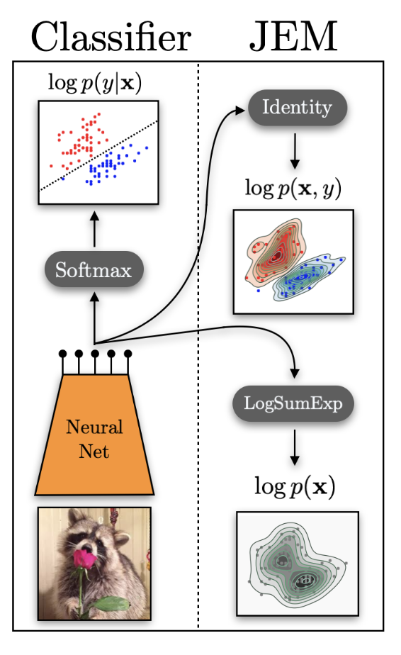
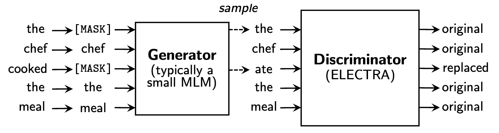
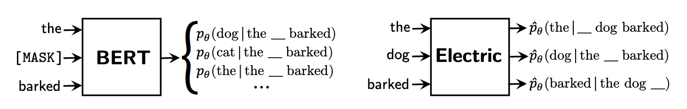
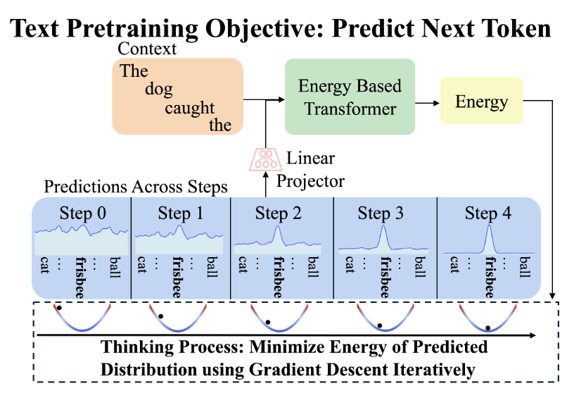

From basics to LLMs
We just don't see them that way (yet)
127× smaller than typical reward models — boosts Llama 3 to 90.7% on GSM8k, 63.7% on MATH
Jiang et al, Learning to Rank Chain-of-Thought, 2025
Better data efficiency than standard autoregressive transformers, tested up to 120B tokens
Gladstone et al, Energy-Based Transformers are Scalable Learners and Thinkers, 2025
The optimal policy in RLHF is literally the Boltzmann distribution over reward-weighted outputs
Part 1
The energy function is the model. It maps every possible configuration x to a scalar — shaping the landscape you just saw.
⬇️
Low energy = "looks like real data"
⬆️
High energy = "doesn't look like data"
Unlike a loss function (a training-time objective over θ), the energy function defines the model itself — any function is valid. No normalization constraints, no factorization required.
More generally, given an input x and a candidate answer y, the energy function returns "how incompatible are they?"
⬆️
High energy = incompatible
⬇️
Low energy = compatible
"Probability comes at a high price, and should be avoided when the application does not require it" — Yann LeCun
Find Y that minimizes E
The Boltzmann Distribution
From the maximum entropy principle: among all distributions consistent with a given average energy, the Boltzmann distribution has the maximum entropy.
Key insight: probability ratios are energy differences → independent energy functions combine additively
Temperature controls how peaked vs. flat the probability distribution is.
When a transformer produces logits over the vocabulary and you compute , you are treating the negative logits as an energy function over vocabulary items and computing the Boltzmann distribution at temperature T.
"I set temperature to 0.3" → more deterministic output
"I set temperature to 1.5" → more creative output
They are adjusting the Boltzmann temperature of an energy-based model.
Sum (or integral) over all possible configurations X
256^(256×256×3) ≈ 10^473,000
50,000^1000
The intractable partition function was one reason EBMs fell out of fashion. We will revisit it in a moment.
Train the EBM by minimizing the negative log-likelihood:
Combining steps 2 and 3:
Push energy down on real data
Just requires a dataset — tractable
Push energy up on model samples
Requires sampling from — the hard part
Without the negative phase, the model assigns low energy everywhere — it learns "real data is good" but never learns what is bad.
The gradient is independent of — but sampling from is not!
Push energy DOWN on real data.
The expectation is on the data distribution — picking samples from our dataset. The update changes parameters to minimize the energy at data points.
Push energy UP on model samples.
We sample from — the model's current distribution. These are points where the model has placed high probability (low energy). The update raises energy on these points, eroding misallocated probability mass.
Combined with the positive phase, the effect is: keep probability on real data, remove it from everywhere else.
Simple gradient descent on data — tractable.
But leads to degenerate solutions: the model could assign constant energy everywhere.
Model learned "real data is good" but never learned what is bad.
Provides contrast — teaches the model what doesn't look like data by pushing energy up on incorrect configurations.
But sampling from is intractable in high dimensions — this is where the difficulty comes from.
An EBM is a scoring function . Low = good.
Probabilities require the partition function Z, which is intractable. Avoid computing it.
Training requires both pushing energy down on data AND pushing energy up on wrong answers.
How to train your EBM? — Contrastive divergence, score matching, noise-contrastive estimation, and more.
Part 2
Based on Song & Kingma, "How to Train Your Energy-Based Models" (2021)
We derived the gradient of the negative log-likelihood:
But the negative phase requires sampling from:
where is intractable for large dimensions. So how do we handle this?
Generate negative samples by running a Markov chain
Avoid sampling altogether — match the gradient of the log-density
Cast density estimation as binary classification (data vs. noise)
Approach 1
Can't sample from exactly — the partition function blocks us.
But we can approximately sample by running a Markov chain that converges to in the limit.
Run an MCMC sampler to generate approximate negative samples x⁻, then plug them into the gradient equation as if they were exact samples from .
The score doesn't need Z — so gradient-based MCMC is feasible!
Starting from a random point, iteratively follow the energy gradient with noise:
When ε → 0 and K → ∞, is guaranteed to distribute as under regularity conditions.
Once we have Langevin samples, plug them into the two-phase gradient:
Data samples (minibatch)
Langevin samples (MCMC)
Langevin dynamics can take a very long time to converge, especially in high-dimensional spaces with multiple modes.
If we need 10,000 Langevin steps per sample, and we need samples for every gradient update during training, the whole thing is prohibitively slow.
If the energy landscape has widely separated modes with high-energy barriers, the chain gets trapped in one mode. The negative samples only represent that region, leaving other modes untouched. This gets worse in high dimensions.
Hinton, 2002
Don't start the chain from a random point — start from a data point.
Very biased, doesn't represent true MLE — but works surprisingly well in practice.
Don't reset the chain between updates — carry over the state. Works because model parameters change slowly between updates.
Keep historical MCMC states in a buffer, randomly sample to initialize new chains.
Approach 2
Reformulate learning to avoid sampling altogether
The score of a distribution is the gradient of the log of probability density with respect to the input:
For an EBM with :
log Z_θ vanishes! — because Z_θ is a constant with respect to x. The score only depends on the energy function, not the intractable partition function.
If two continuously differentiable log probability density functions (PDFs) have equal first derivatives everywhere, and both integrate to 1, they must be the same distribution.
So we can learn the right distribution by matching scores rather than matching probabilities:
No partition function, no sampling, no MCMC — just make the model's score look like the data's score.
Formally, minimize the Fisher divergence between model and data scores:
where the scores are gradients of log probability densities:
Expanding the squared norm:
Problem: the cross-term contains — we don't know , only samples from it!
Hyvärinen (2005) showed the Fisher divergence can be rewritten using only the model's score and its Jacobian:
We only need the model's score and its Jacobian (the Hessian of ).
But: the trace requires second-order derivatives — O(d) backward passes for dimensionality d. Computationally infeasible for high dimensions.
Vincent, 2011
Instead of matching scores on clean data (which requires the Hessian), corrupt data with noise: , where .
The noise kernel is a known Gaussian, so its score has a simple closed form:
Now match the model's score to this known target:
No second-order derivatives, no unknown — just a regression problem: predict the noise direction from the noisy input.
If we perform denoising score matching at many noise levels — from pure noise down to near-zero noise — we get a multi-scale score model.
Sample by starting from noise and gradually denoising via Langevin dynamics at decreasing noise scales (annealed Langevin dynamics).
Denoising score matching ≡ denoising diffusion probabilistic models, just viewed through different lenses (score vs. probability).
Diffusion models are EBMs trained via denoising score matching.
Song & Ermon 2019; Ho et al. 2020; Song et al. 2021
Approach 3
Cast density estimation as binary classification
No more trying to sample from or match its score.
Instead, train a binary classifier to tell whether a sample came from the data distribution or a known noise distribution.
Any classifier that can answer this optimally can implicitly recover the data density — this is theoretically proven (Gutmann & Hyvärinen, 2010).
Unique advantage: NCE learns Z as a by-product — the only method among the three that does.
Can sample from training set.
Could be Gaussian, uniform, or… the output of a pretrained autoregressive model 🧐
(spoiler alert)
Must be able to both sample from and evaluate its density at any point.
Mix them together: draw x from either source with equal probability, then ask the classifier: "which source did this come from?"
At optimality, the classifier's posterior matches the true posterior:
When the classifier is optimal, — the model has recovered the data distribution.
NCE defines , making the log-normalizer a learnable scalar optimized jointly with θ. At convergence, c → −log . This is the only training paradigm among the three that actually recovers Z.
The NCE loss is a binary cross-entropy — classify each sample as data or noise:
This serves as our training loss for the EBM: the energy function is updated so that the model assigns high density to data samples and low density to noise samples — the positive and negative phases emerge naturally from the two cross-entropy terms.
No MCMC sampling, no Hessian, no score functions — just a classifier and a good noise distribution.
The closer the noise distribution is to the data distribution, the better representations are needed to distinguish them.
🎯
Trivial to classify → model learns superficial features
🔥
Hard to classify → model must learn deep structure
This principle connects to contrastive learning broadly — SimCLR, CLIP, and ELECTRA all benefit from harder negatives.
MCMC: Sample negatives via Langevin dynamics. Practical with contrastive divergence, but biased and struggles with high-dimensional multimodal landscapes.
Score Matching: Match ∇ₓ log p, bypassing Z entirely. Denoising variant avoids expensive Hessians and connects directly to diffusion models.
NCE: Learn density by classifying data vs. noise. The only method that learns Z. Quality depends heavily on the noise distribution.
All three methods find creative ways to avoid the intractable partition function — MCMC sidesteps it with sampling, SM removes it via calculus, NCE absorbs it into a classifier.
Part 3
Grathwohl et al., JEM, 2020
A standard classifier with softmax:
There is a hidden energy-based generative model inside every discriminative classifier.

Reinterpret the logits as a joint energy function:
Here — normalizing over all (x, y) pairs introduces the intractable EBM partition function.
Marginalize out y to get an energy over inputs:
The same neural net logits which we used to define the discriminative p(y|x) can be used to define the joint p(x, y) and the generative p(x).
Decompose the joint log-probability:
Trained via SGLD (Langevin dynamics)
Standard cross-entropy loss
Results (all comparisons on the same WideResNet architecture and CIFAR datasets):
Pre-Training Text Encoders as Discriminators

A small generator (MLM) fills in masked tokens. A larger discriminator classifies each token as original or replaced.
ELECTRA's discriminator is doing negative sampling — distinguishing real tokens (data) from fake tokens (generator output).
This is NCE with the generator as the noise distribution!
The generator provides hard negatives — replaced tokens that are plausible in context, forcing the discriminator to learn deep linguistic structure rather than superficial cues. This is exactly the hard negatives principle from the NCE slides.
Clark et al., 2020

BERT predicts a distribution over the vocabulary at masked positions — it only learns from ~15% of tokens per example.
Electric outputs a cloze probability for every token given its context — how likely is this specific token in this position?
Electric produces — a scalar score per token, not a distribution over the vocabulary. Dense signal from every token, no [MASK] needed.
Electric takes ELECTRA's insight further — from binary classification to proper noise contrastive estimation:
Binary classifier: "real or replaced?" Useful representations, but the output is just a label — no density estimate.
Full NCE: uses the generator's known density to convert the discriminator output into calibrated per-token pseudo-probabilities.
Because Electric models per-token cloze probabilities (not a joint sequence probability), it avoids autoregressive factorization entirely — each token is scored independently given context, making it a true energy-based model over token configurations.
Deng et al., 2020
Take a pretrained autoregressive LM and multiply its distribution by an energy correction from a bidirectional model:
🔄
AR model handles fluency and local coherence (token-by-token)
🌐
Bidirectional energy provides global, sequence-level quality correction
💡 Energy-based models as "verifiers" — the EBM doesn't generate, it scores and corrects. Trained end-to-end via NCE.
Zhao et al., 2025
Discrete diffusion models for text unmask tokens in parallel, but predict each token independently:
At each denoising step, the model predicts a clean token at every masked position conditioned only on the noisy context — it cannot capture inter-token dependencies within the same prediction step.
The more parallel the model tries to be (fewer denoising steps), the worse this factorization error gets. This is the fundamental gap between diffusion and AR quality for language.
Apply the residual EBM idea at every denoising step:
Two ways to get the energy function:
Plug in a pretrained AR model as the energy. Turns into parallel sampling from an AR model via importance weighting. One AR forward pass scores a complete sequence.
Train a small energy head via NCE on top of the diffusion model. Positives = clean data, negatives = diffusion model's own predictions.
Inference: draw k candidates from diffusion model, score with energy, resample via importance weights.
Correction matters most in early denoising steps (high masking ratio → worst factorization error). Apply importance sampling only for t ∈ [0.8, 1.0] to get most benefit at a fraction of the cost.
49%
generative perplexity improvement
1.3×
sampling speedup at same quality
400k
fine-tuning steps (NCE variant)
First diffusion model to seriously challenge autoregressive quality on language.
Gladstone et al., 2025 — A radically different paradigm
Unlike EDLM which adds an energy correction, EBT makes the entire model an energy function:
Inference = gradient descent from random noise to a converged prediction:
Each gradient step is one unit of thinking. The model is simultaneously a generator (via energy minimization) and a verifier (via the energy scalar) — unified in a single model.

Iterate more on harder predictions. Same compute for "the" as "serendipitous"? Not anymore.
Energy at convergence directly quantifies confidence. Easy tokens → low energy. Hard tokens → high energy.
Best-of-N sampling without a separate reward model. The energy IS the verifier.
All three emerge from unsupervised pretraining — no RL, no verifiable rewards.
35%
faster scaling on data
28%
faster on batch size
57%
faster on depth
29%
inference improvement via thinking
First architecture to out-scale Transformer++ across multiple axes simultaneously (data, batch size, parameters, FLOPs, depth).
Despite slightly worse pretraining perplexity, EBTs beat Transformer++ on downstream tasks. Verification generalizes better than generation — learning to score is easier than learning to produce.
EBTs can improve by using more forward passes — Transformer++ cannot.
As data becomes more out-of-distribution, thinking helps more — roughly linear relationship. Just like humans engage deliberate reasoning for unfamiliar problems.
As the model sees more data, the benefit from self-verification increases from 4–8% → 10–14%. Extrapolation to Llama-3 scale suggests potentially massive gains.
Experiments up to 800M parameters. Training overhead 3.3–6.6×. Struggles with multi-modal distributions (merges nearby modes). Open question: do advantages persist at GPT-4 scale?
Blondel, Sander, Vivier-Ardisson, Liu, Roulet (Google DeepMind, 2025)
Establishes an exact bijection between autoregressive models and EBMs via the chain rule of probability. Shows this corresponds to the soft Bellman equation in MaxEnt RL — giving a formal justification for why next-token predictors can plan ahead.
Phan, Tschannen, Grathwohl, et al. (Google DeepMind, 2025)
Replaces the discrete softmax head with an energy-based generative head that predicts continuous vectors. Predicts K tokens at once via a lightweight residual MLP, using energy minimization instead of categorical sampling.
Jiang, Luo, Pang, et al. (UCLA, 2025)
A 55M-parameter energy-based reward model that ranks Chain-of-Thought solutions — 127× smaller than typical reward models. Boosts Llama 3 8B to 90.7% on GSM8k by selecting the best reasoning path via energy scoring.
JEM, Electric, Residual EBMs, EDLM, EORM — keep existing models, add energy-based scoring on top. Practical, already works at scale.
EBTs, CALM — the transformer IS the energy function, or uses an energy-based generative head. Theoretically cleaner, remarkable scaling, built-in verification.
Blondel et al. show every autoregressive model has an equivalent EBM via the chain rule — the distinction is less about architecture and more about how we train and decode.
EBT shows learning an energy function (verifier) scales 35–57% faster than a feed-forward predictor. Scoring is easier than producing.
Energy minimization: each gradient step = one thinking step, energy = confidence, convergence = stopping criterion. No ad-hoc prompting tricks needed.
Additive energy functions give modular, tunable, interpretable control over generation quality. No retraining needed — just add energy terms.
No known EBM operates at even GPT-4 scale. The training and sampling challenges that plagued classical EBMs may resurface at frontier model sizes.
Energy-based models: from basics to LLMs
Shashank Shekhar · Toronto LLM Meetup · March 17, 2026
Key references
Song & Kingma 2021 · Grathwohl et al. 2020 · Deng et al. 2020
Zhao et al. 2025 (EDLM) · Gladstone et al. 2025 (EBT)
Blondel et al. 2025 (ARM↔EBM) · Phan et al. 2025 (CALM) · Jiang et al. 2025 (EORM)